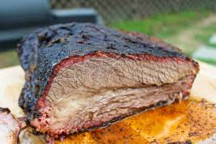

Quicker Whole Smoked Brisket

An average brisket is usually a 14-20 hour cook depending on size and wrapping method.
Then you also have to factor in your rest. Are you going to wrap it in a cooler with a towel
or hot hold it in the oven at 150 overnight? No matter what your plan is you're looking at
3 day plan minimum. This recipie is designed to cut that initial cook down to 5-7 hours.
While the concept may seem crazy, I promise the results are not.
Ingredients:
- 1 full (about 12 lb) packer brisket
- 1/2 cup of kosher salt
- 1/2 cup of course ground pepper
- 1/2 cup of beef broth
Steps:
- Preheat your pellet smoker to 300 degrees. Allow it to heat up for at least 20 minutes with the lid closed.
- Trim your brisket. Leave 1/4" of fat all around the brisket.
- Flip brisket then remove silverskin and any hard fat.
- Season the meat with a 50/50 blend of salt and pepper. Apply generously to the whole brisket.
- Put the brisket on the smoker fat side down, insert a temp probe into the thickest part of the brisket.
- Cook for 3 to 4 hours until the brisket reaches an internal temp of 160-170.
- Fill a spray bottle with beef broth. When the brisket reaches its first temperature benchmark sprtiz it with beef broth and then wrap it tightly in pink butcher paper.Then wrap the entire package tightly in aluminum foil.
- Increase smoker temp to 350 degrees.
- Return brisket to the smoker and cook for about another 2 hours until temp reaches 200-205 degrees. Though ensure it is probe tender, it should slide in and out of the meat like a hot knife through butter. Time and temp aren't always the determining factors.
- When the meat is probe tender remove it from the smoker and open the aluminum foil to release steam for 5-7 minutes.
- Wrap again and place in a cooler with several towels and let rest for minimum and hour. This step is important and the longer you can let it rest the better. This lets the juices flow back into the meat and lets the tissues relax.
- After the rest Enjoy!!!
Home